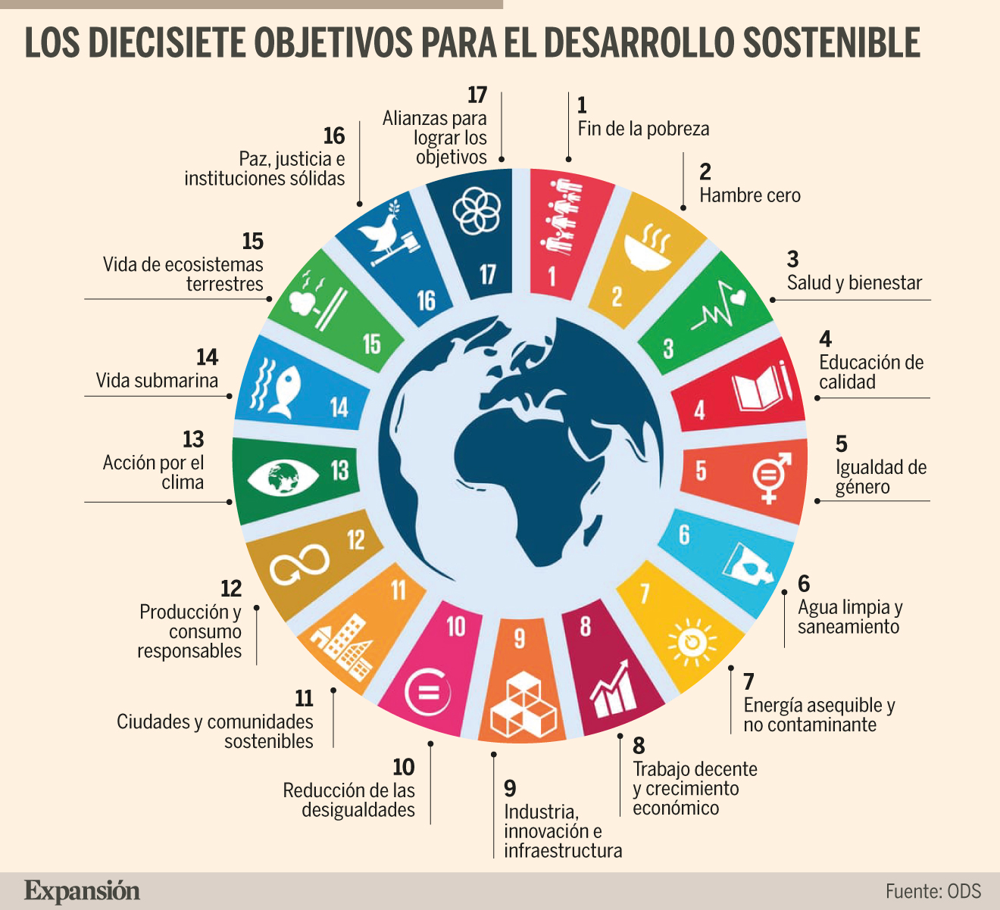

Medidas en Europa
Pacto Verde Europeo: Es el marco general para la transición hacia una economía climáticamente neutra. Incluye acciones como el Plan de Acción para la Economía Circular y normativas para reducir el impacto ambiental de los productos. Ejemplo: El programa “Circular Plastics Alliance” busca aumentar el uso de plásticos reciclados en productos y embalajes.
Estrategia de la Granja a la Mesa (Farm to Fork): Promueve sistemas alimentarios sostenibles, desde la producción hasta el consumo, reduciendo el desperdicio de alimentos en un 50% para 2030. Ejemplo: Francia, siguiendo estas directrices, ha implementado leyes que prohíben a los supermercados desechar alimentos en buen estado, fomentando su donación.
Directiva sobre plásticos de un solo uso: Adoptada en 2019, restringe productos como bastoncillos de algodón, recipientes de comida de poliestireno expandido y pajitas. Ejemplo: En Alemania, empresas como Tupperware ofrecen incentivos para el uso de envases reutilizables en cafeterías y supermercados.
